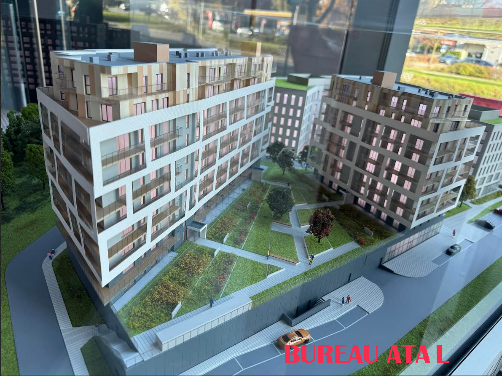
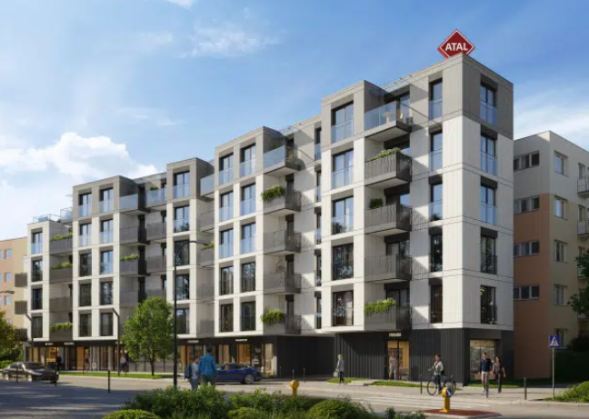
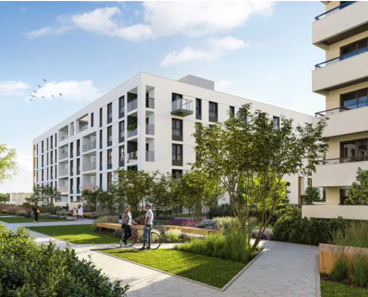
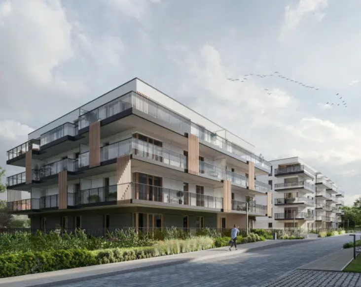
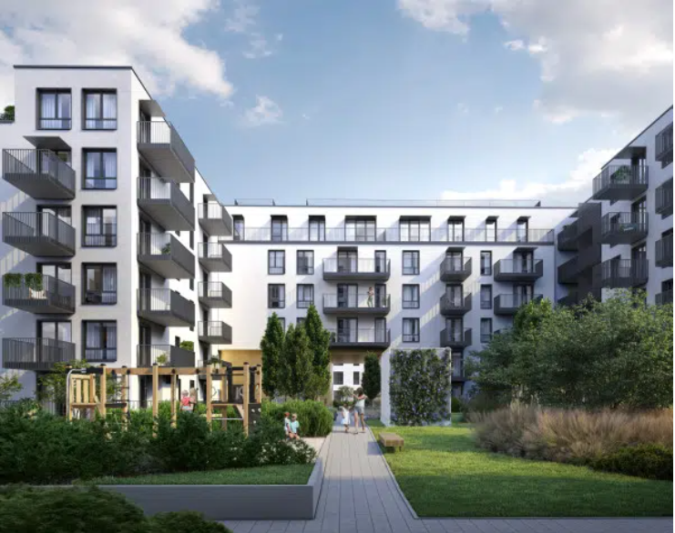
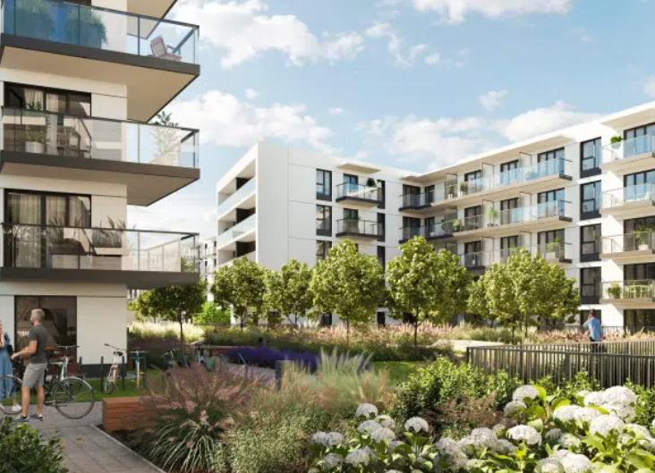
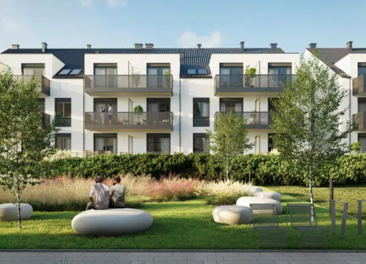
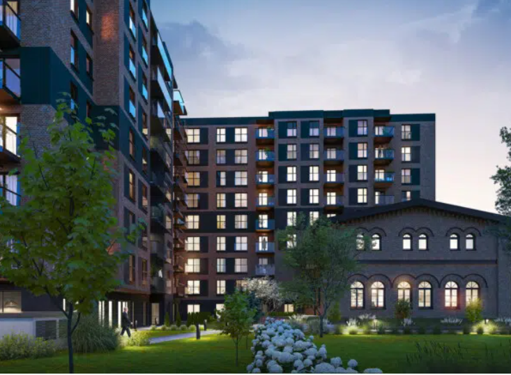

Appartements à Wrocław
Pologne
Immo Schreiber vous présente les appartements neufs ATAL à Wrocław — une opportunité d'investissement unique, accessible depuis le Luxembourg.
Immo Schreiber vous présente les appartements neufs ATAL à Wrocław — une opportunité d'investissement unique, accessible depuis le Luxembourg.
ATAL S.A. est l'un des plus grands promoteurs immobiliers de Pologne. Fondée en 1990
Immo Schreiber est votre intermédiaire francophone basé au Luxembourg. Nous facilitons toutes les démarches : visites, financement, signature — en français.








Toutes les informations clés pour investir sereinement depuis le Luxembourg — charges, fiscalité, cadre juridique.
Déclaration obligatoire auprès de l'Urząd Skarbowy. Deux régimes :
Trois composantes principales :
Zawarta w dniu [data] w [miasto] pomiędzy:
Wynajmującym: [imię, nazwisko, adres]
a Najemcą: [imię, nazwisko, adres]
§1. Przedmiotem najmu jest lokal mieszkalny położony w [adres], o powierzchni [m²].
§2. Czynsz miesięczny wynosi [kwota] PLN i płatny jest do dnia [data] każdego miesiąca.
§3. Umowa zostaje zawarta na czas [określony / nieokreślony].
§4. Najemca zobowiązuje się do utrzymania mieszkania w należytym stanie i ponosi koszty mediów.
§5. Kaucja wynosi [kwota] PLN i zostanie zwrócona po zakończeniu najmu.
Immo Schreiber vous accompagne de A à Z — de la visite à la signature — en français, depuis le Luxembourg. Contactez-nous pour une consultation gratuite.
Voir le catalogue complet →